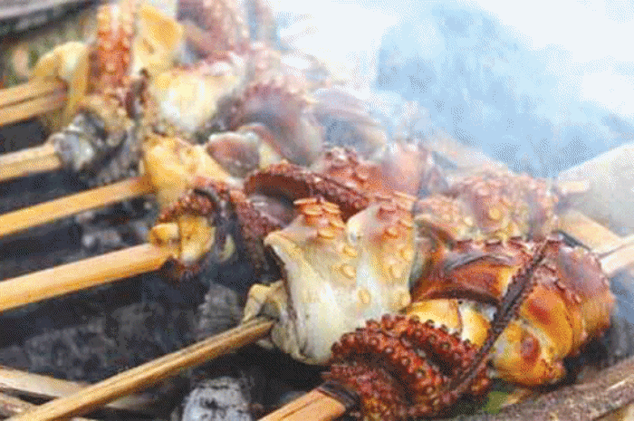
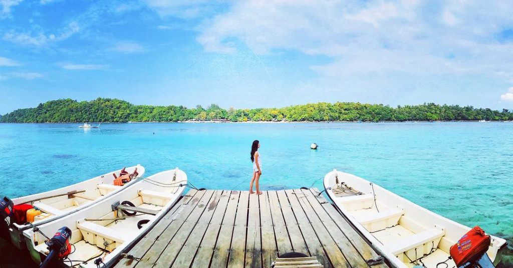

Tugas Projek
Teknik Kolaborasi Pengembangan Perangkat Lunak
- Nama Anggota :
- M.Alimuda Sakti Nst, Nim : 161110358
- Nurul Hasanah Siregar, Nim : 161110340
- Fais Muzain, Nim : 16111
- Devika Ayusuwari, Nim : 16111
Wisata Indonesia

- Indonesia adalah negara kepulauan di Asia Tenggara
- yang memiliki 17.504 pulau besar dan kecil
- Sumatra dengan luas 473.606 km²
Kota Sabang

- Terletak di Provinsi Aceh
Transportasi
- Medan - Banda Aceh durasi perjalanan sekitar 13 jam
- dengan tiket bus sekitar Rp.200.000-400.000
Hotel
Mata Ie Resort

- Hotel ini terletak di Anoi Itam, Kecamatan Sukajaya, Sabang
- Menyediakan fasilitas seperti kolam renang, ruang karaoke, ruang meeting, restaurant & café, dan cottage.
Kuliner
Sate Gurita Sabang
- Berkunjung ke Sabang, kita bisa menemukan sate Gurita.
- Tekstur dari kuliner khas Kota Sabang ini kenyal dan umumnya disajikan dengan sambal bumbu padang atau sambal kacang yang bisa Toppers pilih sesuai selera.
- Biasanya satu porsi kuliner Sabang ini dihargai Rp10.000
Wisata
Pantai Iboih
- Pantai yang satu ini bisa dibilang pantai yang jadi ikon Kota Sabang.
- Lokasinya hanya 30 menit dari pusat kota Sabang
Syntax Highlighting
Powered by Lea Verou's Prism
(function() {
function hanoi(n, a, b, c) {
return n ? hanoi(n - 1, a, c, b)
.concat([[a, b]])
.concat(hanoi(n - 1, c, b, a)) : [];
}
return hanoi(3, 'left', 'right', 'mid')
.map(function(d) {
return d[0] + ' -> ' + d[1];
});
})();
Named Route
Powered by bespoke-hash
Look up! This route has been named with a data-bespoke-hash attribute.
Just the beginning…
- Edit Pug (formerly Jade) markup in src/index.pug
- Edit Stylus styles in src/styles/user.styl
- Edit JavaScript in src/scripts/main.js
- Enjoy! :) -@markdalgleish